Brief and objective
Michelle first came with a two-floor layout and a request to show both the interior plans and how the building looks from outside. The order included 2D floor plans for both levels and one exterior visualization, based on a precise 3D model — a complete picture of the project, inside and out.
Once the project was approved, Michelle came back for more — adding an axonometry and an additional interior angle, again with the bundle discount applied. The full project became one continuous collaboration, with the discount applied to both the original order and the follow-up.
Working in SketchUp yourself? Send the model with your scenes. I’ll refine what the views need and render from it.
- My role
- Refining the designer’s SketchUp model, then the exterior, both floor plans, the axonometry and the interior view, finished by hand in Procreate
- First order
- 2D floor plans for both levels + 1 exterior view
- Follow-up
- 1 axonometric view + 1 additional interior angle
- Supplied
- The designer’s SketchUp model with room scenes, and a finishes presentation: exterior direction, floor plans with materials, kitchen and furniture boards
- Delivered
- 10 days
- Model
- One 3D model, inside and out: the designer’s, refined by me
What the client sent
The designer’s own SketchUp model with scenes of the rooms and the exterior, and her finishes presentation for every space.
Pages from the designer’s finishes presentation
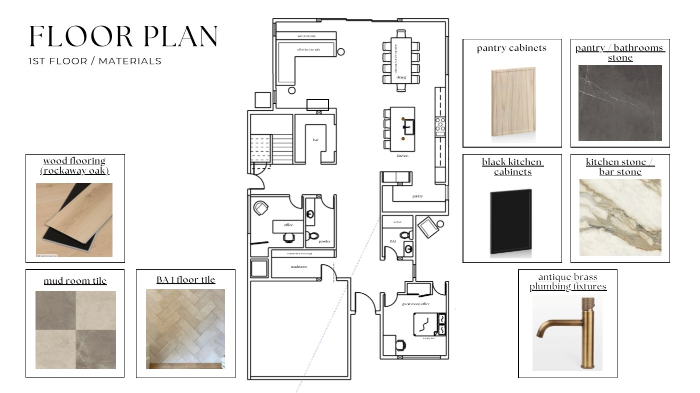
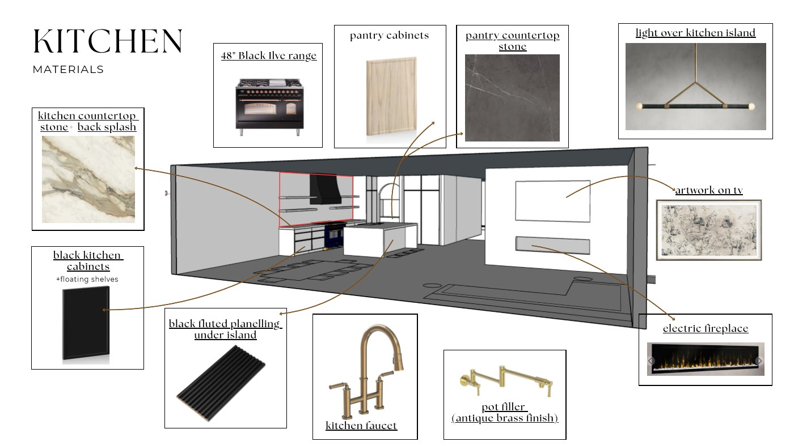
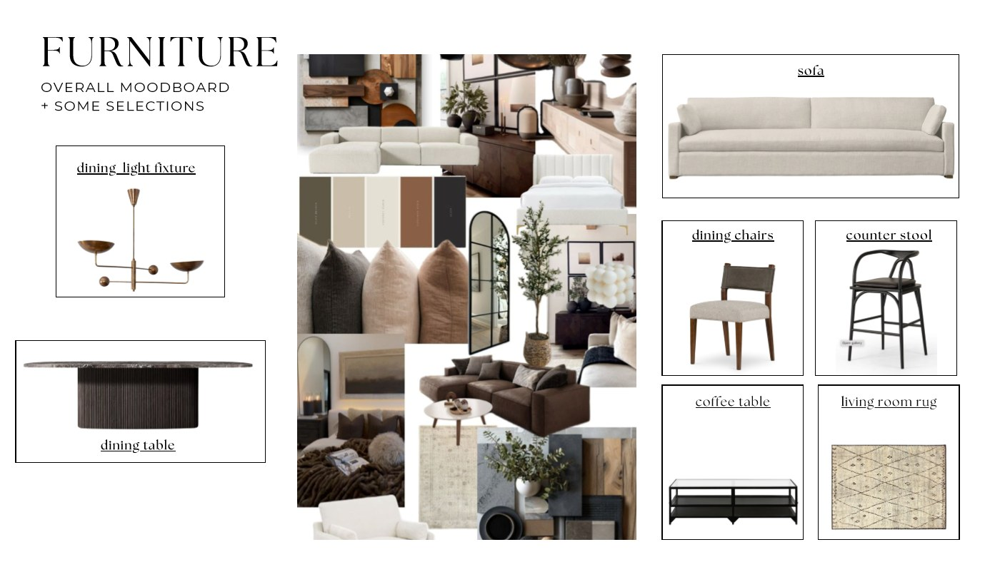
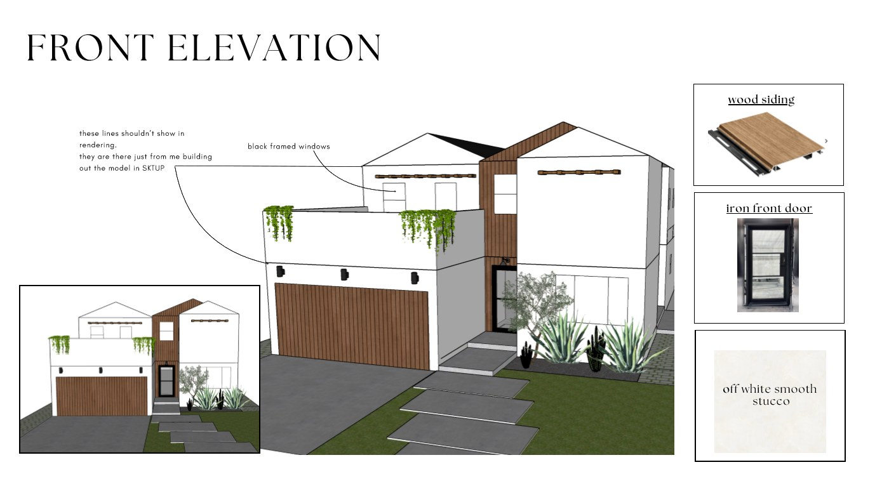
Finishes, fixtures and furniture from the brief
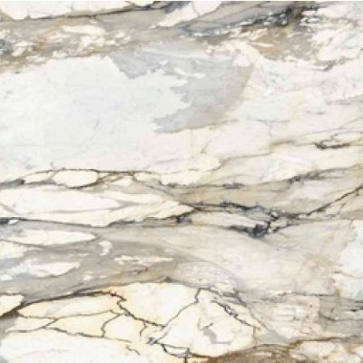
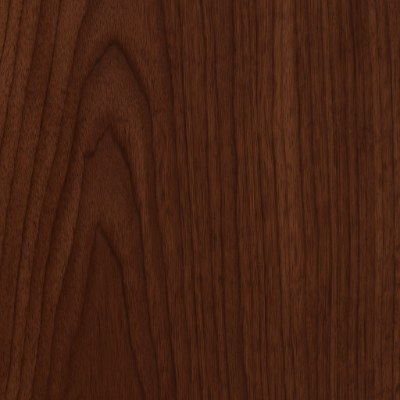
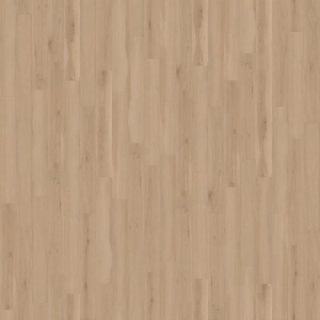
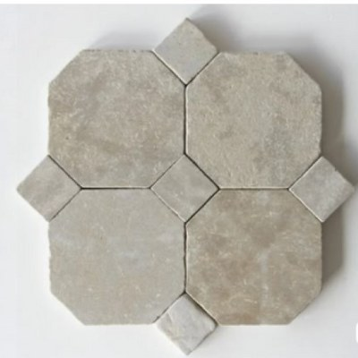
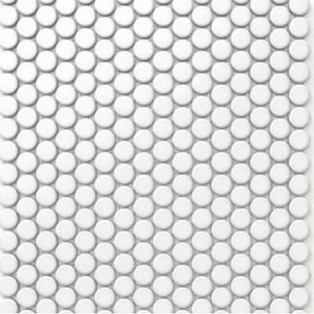
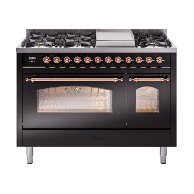
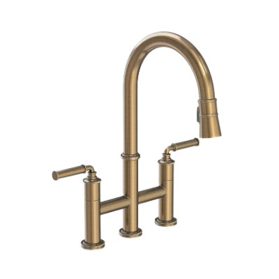
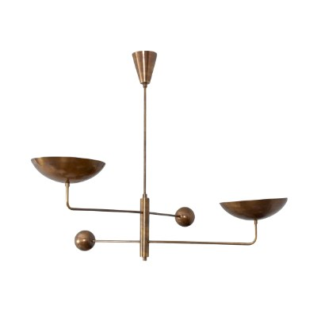
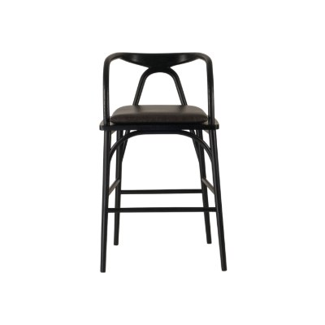
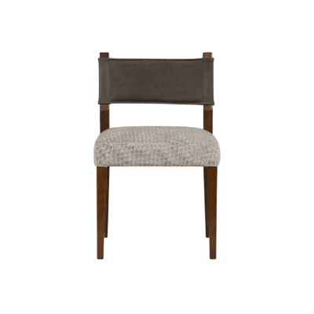
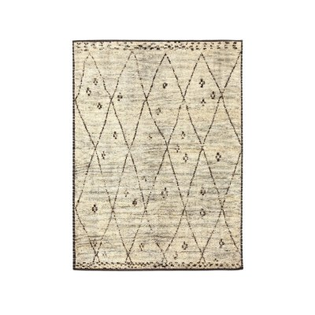
The 3D model, refined
The model came from the designer; I refined it for the views and set the angles. The video walks through it; below are the angles of the exterior, the interior view and the axonometry.
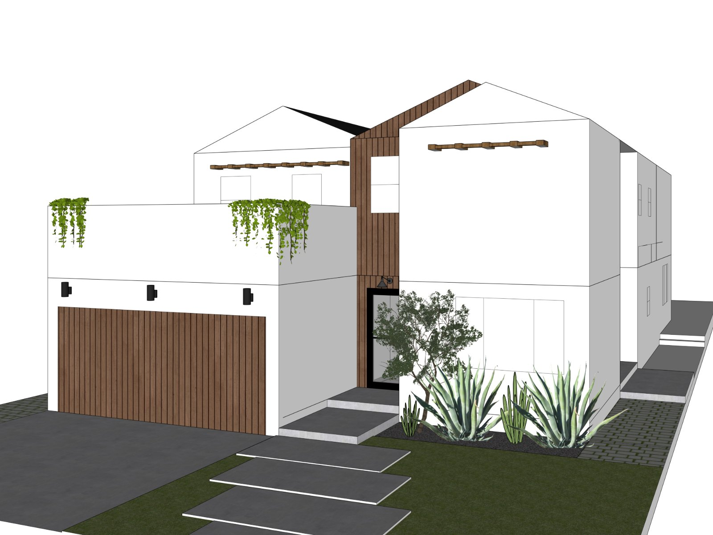
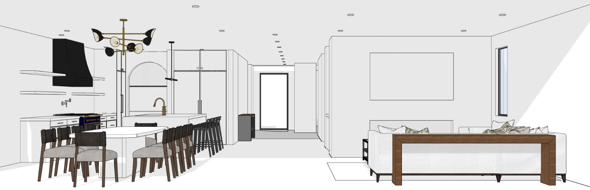
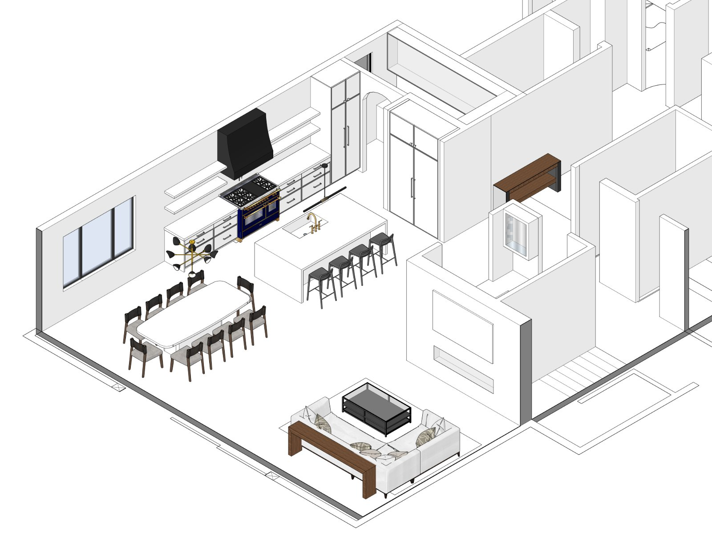
The model angle and the final exterior
Move across the image: the approved angle of the 3D model, and the same view finished by hand.
Revisions included. Two free rounds on every view: one at the 3D stage, one on the final view. Comments come straight on the image.
 AngleRender
AngleRenderFinal views
Choose a view below; move across the large image to look at the details.
Amazing! Yes! Thank you. … Thank you for all your work!
[ Related services ] Exterior rendering · 2D floor plan · Axonometric view
Start a similar project